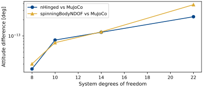
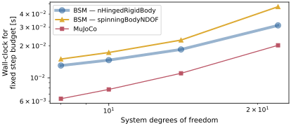

scenarioCompareFlexPanels
Fourth scenario in the dynamics-engine comparison series (see scenarioCompareOrbit for the introduction).
This scenario approximates structural flexibility by discretizing each of two solar
arrays into a serial chain of N rigid segments connected by torsional spring-damper
hinges. Sweeping N varies the model dimensionality (the state size grows with the
number of hinges) and shows how each engine’s wall-clock cost scales with complexity.
The same physical chain is built three ways so the two Backsubstitution effector
implementations can be timed head to head against the recursive engine. On the BSM
side each array is either a C++ Module: nHingedRigidBodyStateEffector (panels added through
addHingedPanel) or a C++ Module: spinningBodyNDOFStateEffector (an N-link chain of
SpinningBody objects); both are advanced by the same Backsubstitution hub solve but
differ in implementation maturity. On the MuJoCo side each array is a serial chain of
N hinge-jointed child bodies. To match the chain geometry across all three, each
segment’s center of mass is offset by -d along its local x-axis and the next hinge
attaches at the segment’s far end (-2d); the spring stiffness and damping are applied
on each joint.
The default sweep is N = 1, 2, 4, 8, 16, 32. The integration time step scales with
N because segment stiffness grows as the segments shrink, so a fixed step adequate
for a few large segments would under-resolve the many-segment cases. The timing
measurement uses a fixed step budget at each N so the wall-clock reflects per-step
cost as a function of model size. Pass a smaller nSegmentsList (as the unit test
does) to keep the runtime short.
The script is found in the folder basilisk/examples/dynamicsComparison and executed
by using:
python3 scenarioCompareFlexPanels.py
Illustration of Simulation Results
Note
The automated documentation build uses the reduced profile
N = 1, 2, 4, 8 to bound CI time. The figures below therefore do not
contain the N = 16 or N = 32 cases and should not be used to infer
asymptotic scaling. Run this script directly with its defaults to generate
the complete six-point study.
The two engines agree to round-off at all four dimensionalities in the reduced documentation profile.

Within this reduced range, the wall-clock cost of both engines grows with the number of flexible degrees of freedom. The complete default sweep is required before comparing broader scaling behavior.

Next comparison: scenarioCompareOrbitMultibody returns the articulated model to orbit and examines differential point-gravity forces.
- scenarioCompareFlexPanels.buildBSM(nSegments, dt, record)[source]
Build (and initialize) the Backsubstitution (BSM) chained-panel simulation.
- Parameters:
nSegments (int) – number of segments per chain
dt (float) – integrator time step [s]
record (bool) – if True, attach a hub-state recorder
- Returns:
(scSim, recorder, handles).- Return type:
tuple
- scenarioCompareFlexPanels.buildBsmNDOF(nSegments, dt, record)[source]
Build the BSM chained-panel simulation with the N-DOF spinning-body effector.
Models the identical flexible chain as
buildBSM()(same segment mass, inertia, hinge stiffness/damping, geometry, and root deflection) but expressed with C++ Module: spinningBodyNDOFStateEffector instead of C++ Module: nHingedRigidBodyStateEffector, so the two Backsubstitution effector implementations can be timed head to head. Both ride the same Backsubstitution hub solve; only the appendage effector differs.- Parameters:
nSegments (int) – number of segments per chain
dt (float) – integrator time step [s]
record (bool) – if True, attach a hub-state recorder
- Returns:
(scSim, recorder, handles).- Return type:
tuple
- scenarioCompareFlexPanels.buildMujoco(nSegments, dt, record)[source]
Build (and initialize) the MuJoCo chained-panel simulation.
- Parameters:
nSegments (int) – number of segments per chain
dt (float) – integrator time step [s]
record (bool) – if True, attach a hub-state recorder
- Returns:
(scSim, recorder, handles).- Return type:
tuple
- scenarioCompareFlexPanels.measureWallClocks(buildFuncs, nSegments, dt)[source]
Time a fixed step budget for several implementations in alternating order.
- Parameters:
buildFuncs (sequence) – simulation builders such as
buildBSMandbuildMujoconSegments (int) – number of segments per chain
dt (float) – integrator time step [s]
- Returns:
one
{"median", "min", "std"}timing dictionary per builder [s].- Return type:
list
- scenarioCompareFlexPanels.mujocoModel(nSegments)[source]
Return the MJCF model: hub with two
N-segment hinged chains.- Parameters:
nSegments (int) – number of segments per chain
- Returns:
MJCF XML string.
- Return type:
str
- scenarioCompareFlexPanels.panelRootDcm(sign)[source]
Return the root-frame DCM that makes both panel chains extend outward.
- scenarioCompareFlexPanels.plotResults(rows)[source]
Build the scenario figures.
- Parameters:
rows (list) – per-
Nmetric dictionaries fromrunOne()- Returns:
mapping from figure name to matplotlib figure.
- Return type:
dict
- scenarioCompareFlexPanels.relativePrincipalAngle(sigmaBSM, sigmaMujoco)[source]
Per-sample principal rotation angle between two MRP attitude histories.
- Parameters:
sigmaBSM (numpy.ndarray) – BSM MRP history, shape
(N, 3)sigmaMujoco (numpy.ndarray) – MuJoCo MRP history, shape
(N, 3)
- Returns:
principal angle per sample [rad].
- Return type:
numpy.ndarray
- scenarioCompareFlexPanels.run(showPlots=False, saveJson=False, nSegmentsList=(1, 2, 4, 8, 16, 32), resultsDir=None)[source]
Main function, see scenario description.
- Parameters:
showPlots (bool, optional) – if True, plot and show the simulation results. Defaults to False.
saveJson (bool, optional) – if True, write the comparison metrics to
results/scenarioCompareFlexPanels.json. Defaults to False.nSegmentsList (tuple, optional) – per-chain segment counts to sweep. Defaults to
(1, 2, 4, 8, 16, 32). The unit test passes a smaller sweep to keep the runtime short.resultsDir (str, optional) – explicit artifact directory. Defaults to the scenario
resultsfolder.
- Returns:
mapping from figure name to matplotlib figure.
- Return type:
dict
- scenarioCompareFlexPanels.runOne(nSegments, accuracyWindow)[source]
Validate accuracy and benchmark a single dimensionality.
- Parameters:
nSegments (int) – number of segments per chain
accuracyWindow (float) – duration of the accuracy comparison [s]
- Returns:
metrics for this
N(DOF, attitude error, wall-clock per engine).- Return type:
dict
- scenarioCompareFlexPanels.segmentHalfLength(nSegments)[source]
Half-length
dof one chain segment [m].